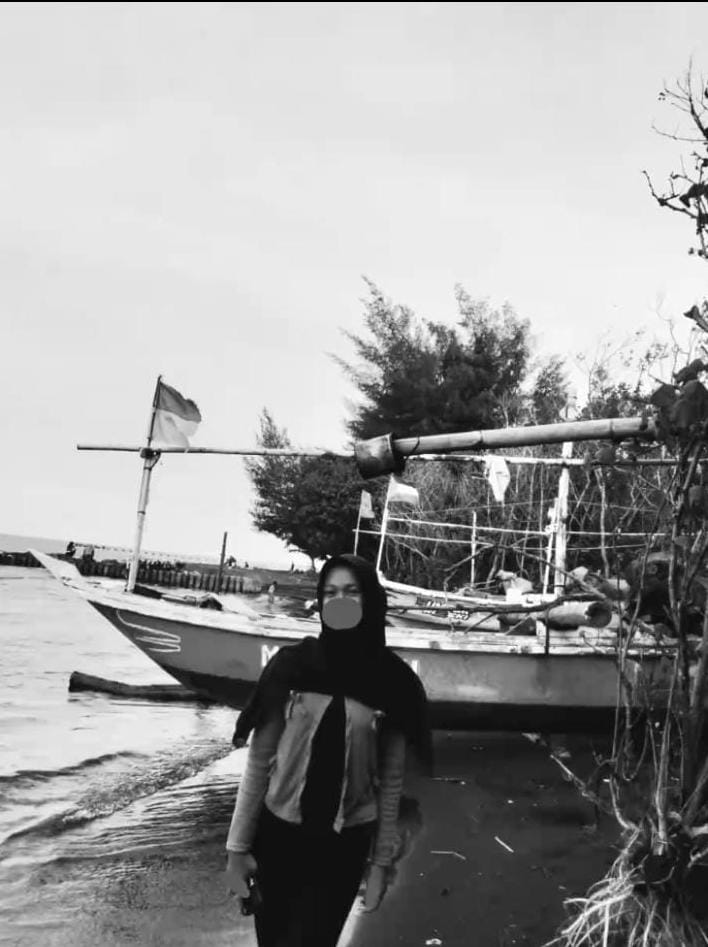

Struktur Kelas 10C
Daftar pengurus dan wali kelas — informasi diambil dari data kelas.
Pak Muhammad Dzikrullah
Wali Kelas
Muhammad Royyan Arbian
Ketua Kelas
Vikri Mussyafa
Wakil Ketua
Qaid Ibad Efendi
Sekretaris

Nadia Yogi Karisma Putri
Bendahara